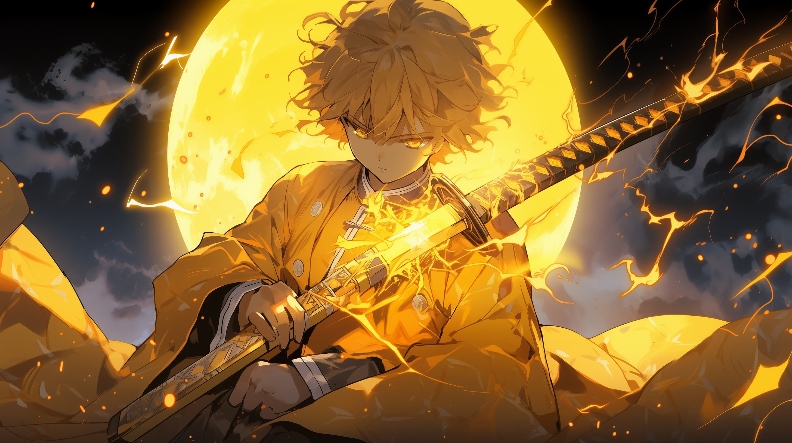

ZENITSU


Tanjiro Kamado (竈門 炭治郎, Kamado Tanjirō) is the oldest son of charcoal sellers Tanjuro and Kie. His life changed when his entire family was massacred by the demon Muzan while he was out selling charcoal. At the same time, his sister, Nezuko, survived but had been turned into a demon. This event becomes his drive and motivation to find a cure for her and turn her back into a human. To this end, he decided to join the Demon Slayer Corps. He initially trained under Sakonji, learning the "Water Breathing" (水の呼吸, Mizu no kokyū) sword style. Later, Tanjiro began using his family's "Hinokami Kagura" (ヒノカミ神楽, lit. Dance of the Fire God) technique based on the original breath style, "Sun Breathing" (日の呼吸, Hi no kokyū). Tanjiro would then merge both methods to create a more sustainable fighting style. His skull is exceptionally thick, and his headbutts are used as gags throughout the series. He is characterized as a pure and kind-hearted individual, always looking after the well-being of his comrades and sympathizing with the plight of demons. Nonetheless, he possesses an understanding that their actions cannot be forgiven. His endless optimism and simple nature enable most people to enjoy his company. Still, at the same time, it also puts him at odds with certain personalities. Tanjiro has a heightened sense of smell which allows him to track down demons and evade their attacks, as well as determine people's real emotions. Tanjiro's sword is colored black, occasionally turning crimson red. His sword technique becomes enhanced when combined with Nezuko's "Blood Demon Art: Exploding Blood", a method he later learns to perform without her help. Though he eventually avenges his family during the final battle, he loses his left arm and right eye in the process while being fatally wounded. Both are restored during Muzan's attempt to turn him into his successor by transforming him into a demon, though with the aid of his friends, he becomes human once again.
take a look at this so that you find something intresting